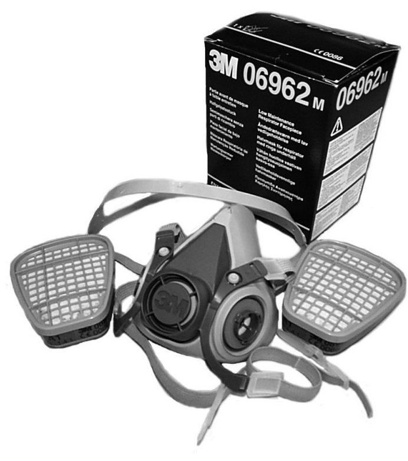

30 31 127 Breathing Protection Mask
30 31 127 Breathing Protection Mask

Specifications
Breathing protection 3M 06967. Size Medium.
Contents: 1 breathing mask, 8 filters A1 and 10 filters P2.
Range of application
For work with isocyanate products and with products where personal protective equipment is required. See chapter Introduction, Accident prevention measures.
Packaging
1
Transport
No restrictions apply when transporting this product.
Directives
NOTE:
- At the minimum, a P3 filter is used for working with isocyanate products.
- At the minimum, a P3 filter and carbon filter should be used when grinding polyurethane products.